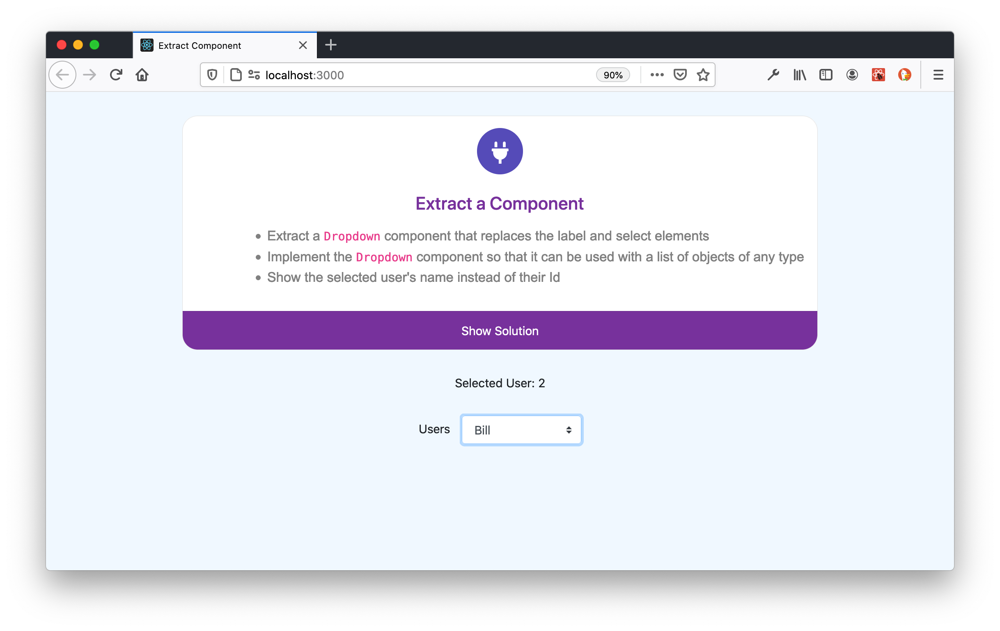

This exercise involves refactoring existing code by extracting a component.
Extracting components is an essential part of a React developer's toolkit. It's a task that React developers routinely perform on a daily basis.
A developer should be able to explain the benefits of extracting components from existing code.
1 out of 10
Extracting components entails removing some markup and related state from one component and encapsulating it a new component.
Component extraction is based on the Extract Function pattern. You can read more about that pattern at https://refactoring.com/catalog/extractFunction.html.
Extracting components improves your code in the following ways.
Ideally, the markup for a React component should only call other components because doing so increases the readability of the original component. It also encourages you to implement simpler, more understandable, and extensible, components.
Markup that does not merely use other components resembles HTML. Markup that resembles HTML is more difficult to read, understand, modify, and extend, than markup that exclusively invokes other components. You will see evidence of the stark contrast between markup that is restricted to invoking other components versus markup that resembles HTML in this coding exercise.
Of course, at some point you must resort to markup that does not merely use other components, but instead resembles HTML. That type of markup should be restricted to "leaf" components. A leaf component is a simple component that encapsulates a small bit of HTML functionality. The component that we will extract in this exercise is a leaf component.
In addition to simplifying the original component, extracting components produces more general components that in turn can be used by other components. As you implement React applications, you should strive to continually implement "UI" components. A UI component is a component that is divorced from any domain specific knowledge and encapsulates a small bit of HTML functionality.
Most UI components will be leaf components whose markup resembles HTML. As a result, it is important to restrict UI components to one small piece of functionality that can easily be used by other, presumably domain-specific, components, although some UI components may be composed of other UI components that are not domain specific. In general, you should strive to implement as many general, reusable UI components as you can as those components will make future development much easier.
Finally, extracting components will reduce the amount of copying and pasting that you perform between components to a bare minimum. Copying and pasting is a violation of the DRY pattern and results in inconsistencies and bugs in your code. Ideally, you should not paste any code whatsover between your React components.
The starting point for the Extract Component exercise is shown in the following figure.
The solution for the Extract Component exercise is shown in the following figure.
The only visible difference between the starting point and the solution in the preceding screenshots is the value displayed when the user selects an item from the dropdown list.
The code for the exercise's starting point is shown in the following listing.
import React, {useState} from 'react'
import './App.css'
const Start = () => {
const [selectedUser, setSelectedUser] = useState(1)
const users = [
{ id: 1, name: 'Alice' },
{ id: 2, name: 'Bill' },
{ id: 3, name: 'Courtney' },
{ id: 4, name: 'Daniel' },
{ id: 5, name: 'Edward' },
{ id: 6, name: 'Francis' },
]
return (
<div>
<div className='selected-user'>Selected User: {selectedUser}</div>
<label className='dropdown-label'>Users</label>
<select
className="custom-select"
style={{width: '10em'}}
value={selectedUser}
onChange={e => setSelectedUser(e.target.value)}
>
{users.map((user) =>
<option
key={user.id}
value={user.id}
>
{user.name}
</option>
)}
</select>
</div>
)
}
export default Start;
The pertinent CSS is shown in the following listing. Note that the custom-select CSS class used above is from Bootstrap.
.selected-user {
margin-bottom: 1em;
}
.dropdown-label {
margin-right: 1em;
}
The starting point for this coding exercise is a simple component that provides a dropdown list and displays the index of the currently selected item from the dropdown.
The goal of this exercise is to extract the code for the dropdown into a Dropdown component. The Dropdown component must be a general component that can be used for any list of JavaScript objects.
The exercise also contains an additional twist: You must show the name of the user selected in the dropdown, instead of the index. Most companies that impose coding exercises on their candidates will include at least one such twist, so you should be prepared for such eventualities.
Notice that it takes some time to understand the markup in the preceding listing that creates the dropdown menu. That markup consists of a select element that contains option elements. The options are created by iterating over an array of JavaScript objects and creating a corresponding option element for each item in the array.
You cannot merely glance at the Solution component's markup and immediately understand what it does. You have to grok the elements and how they are created, in addition to understanding that the select element has an onChange event handler that React invokes when the user selects an item from the dropdown. It's less than 15 lines of JSX overall, but it will still take the average React developer a minute or so to understand exactly how it works. That minute or so is not a big deal, but in the real world, the markup for most React domain-specific components can easily include 10 or more such markup segments, which exponentially increases the amount of time it takes to understand the code. Maintaing and updating code like that is a chore. Let's see how we can use the Extract Component pattern to reduce that burden.
The Solution component for this coding exercise is shown in the following listing.
const Solution = () => {
const [selectedUser, setSelectedUser] = useState(1)
const users = [
{ id: 1, name: 'Alice' },
{ id: 2, name: 'Bill' },
{ id: 3, name: 'Courtney' },
{ id: 4, name: 'Daniel' },
{ id: 5, name: 'Edward' },
{ id: 6, name: 'Francis' },
]
const getUsername = () => users[selectedUser-1].name
return (
<div>
<div className='selected-user'>Selected User: {getUsername()}</div>
<Dropdown
label='Users'
items={users}
value={selectedUser}
valueProperty='id'
displayProperty='name'
handleOnChange={e => setSelectedUser(e.target.name)}
width='10em'
/>
</div>
)
}